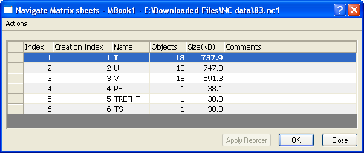

Das Dialogfeld Matrixblattnavigation ist dem Dialogfeld Arbeitsblattnavigation sehr ähnlich. Verwenden Sie es, um Matrixblätter in der aktuellen Matrixmappe zu verwalten.

In diesem Dialogfeld können Sie:
Weitere Informationen zum Verwalten von Blättern finden Sie in der Hilfe des Dialogfelds unter Arbeitsblattnavigation.